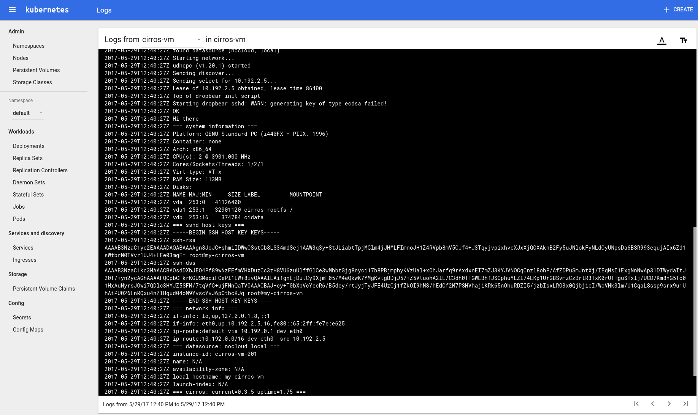

VM Logging
Virtlet runs many VMs on Kubernetes and each of them writes something to stdout and stderr. User
is given two options:
- redirect
stdout/stderrto unix socket (DEFAULT) - redirect
stdout/stderrinto pty console
Redirecting stdout and stderr into unix socket
By default VM logs are sent to unix socket:
/var/lib/libvirt/streamer.sock
This option is enabled by default. If you want to disable it set disable_logging to true in virtlet-config configmap.
Architecture
There is one directory on host needed:
- /var/log/pods (predefined by Kubernetes) is where Kubernetes expects JSON formatted logs to appear.
NOTE: It is important to configure volume mount for mirantis/virtlet.
Kubernetes is not able to find and understand raw log files that contain direct dumps from VM. Therefore we run a worker which is reformatting VM logs into a special JSON format that is understood by Kubernetes.
Provided that redirecting stdout and stderr to unix socket is turned on (DEFAULT)
user should be able to see logs on Kubernetes Dashboard:

Obtaining logs from CLI should also work:
$ kubectl logs cirros-vm
...
=== datasource: nocloud local ===
instance-id: cirros-vm-001
name: N/A
availability-zone: N/A
local-hostname: cirros-vm
launch-index: N/A
=== cirros: current=0.3.5 uptime=1.75 ===
____ ____ ____
/ __/ __ ____ ____ / __ / __/
http://cirros-cloud.net
login as 'cirros' user. default password: 'cubswin:)'. use 'sudo' for root.
Limitations
There is one limitation when redirecting logs to unix socket is enabled:
- Command
virsh console <vm>no longer works since libvirt serial port type is 'unix' and not 'pty'. To makevirsh consoleworking setdisable_loggingto true in virtlet-config configmap which will disable logging.
Redirecting stdout and stderr into pty
In some cases it may be desired to enable virsh console <VM> command that is disabled in case when
redirecting everything into files is enabled (see Limitations above). Just set disable_logging to true in virtlet-config configmap.
Limitations
There are some limitations when redirecting logs into unix socket is disabled:
- command
kubectl logs <MY-POD>will not work - command
kubectl attach <MY-POD>will not work - Kubernetes Dashboard will not display any logs for Virtlet pods